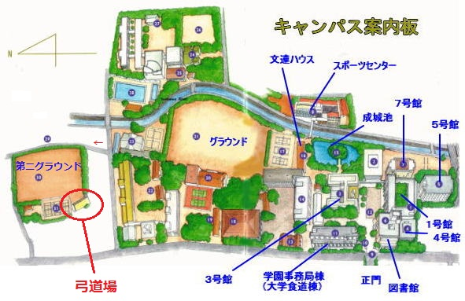

このページは成城大学弓道部に入部を希望する方、また、成城大学弓道部について知りたい方のためのコーナーです。
成城大学弓道部の公式Twitterできました。
＠seijo_kyudo2016で検索！
弓道は基本的に的のどこかに矢が中（あた）れば一中となり、それだけでポイントになります。
試合では矢を一人あたり4本1セット×5で引いて、そのうち何射中ったかで勝敗が決まります。
残念ながら入部してすぐに弓を的の前で引けるようにはなりません。
的の前で引くようになるまでには、
弓を引く型を覚えるための徒手練→力の使い方を覚えるためのゴム弓→実際に弓を使って引く素引き→矢を番えて巻藁に至近距離で離す巻藁練習
以上の順番があります。初心者の早い人だと3ヶ月程度（夏合宿前ごろ）で的の前で引けるようになります。
弓を引くために使う道具のことを弓具(きゅうぐ)と言います。
弓と矢はもちろんですが、弦を引くときに右手の親指などの指を傷めないよう装着する鹿革製の弽(ゆがけ)や、胸を弦で払わないための胸当て(女性のみ着用)なども大切な道具です。
また、弓と矢は部の物を貸し出していて、弓に関しては全員が部のものを使用しています。
弓道部は3年生がリーグ戦終了後の11月に引退なので現在は新2年生9人(男：女＝４：５)と新3年生9人(男：女＝４：５)で活動しています。
部員のほぼ全員が初心者なので、大学から始める場合でも活躍のチャンスは大いにあります。経験者の方は即戦力として活躍することができます！
主に試合予定や月毎の活動スケジュールは活動日程や成城大学のホームページに載っています。
その他のイベントとしては、8月に長野で5泊6日で行われる合宿や、3月の春の集中稽古、追いコンやボーリング大会などを行う前期納会があります。
活動場所は第二グラウンド左手奥にある弓道場になります。
グラウンド入り口からは見えにくいですが、左奥の高台に位置しています。

こちらの動画で行き方を紹介しています。
わが弓道部は男女問わず、初心者も経験者も大歓迎です！
中学や高校で弓道をやっていたけど大学で続けようか迷ってる…
大学から弓道やってみたいけど初心者でもできるか不安…
また、このページをご覧になって興味を持ってくださった方、Q&Aやこのページを読んで、分からないことや詳しく聞いてみたいと思った方は、交流用掲示板やお問い合わせ、公式Twitterからご連絡ください。
できるだけ早くお答えさせていただきます。
お待ちしてます！！